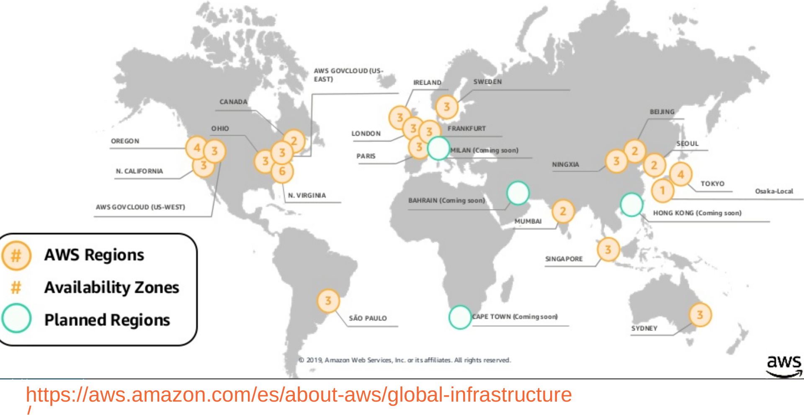
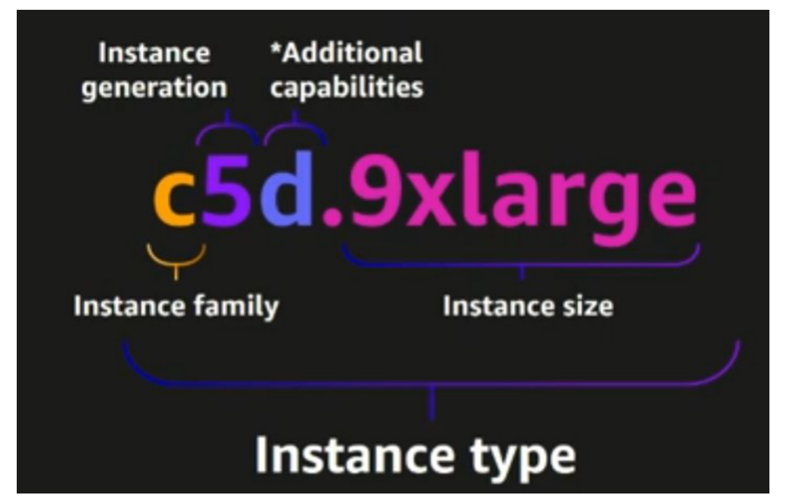
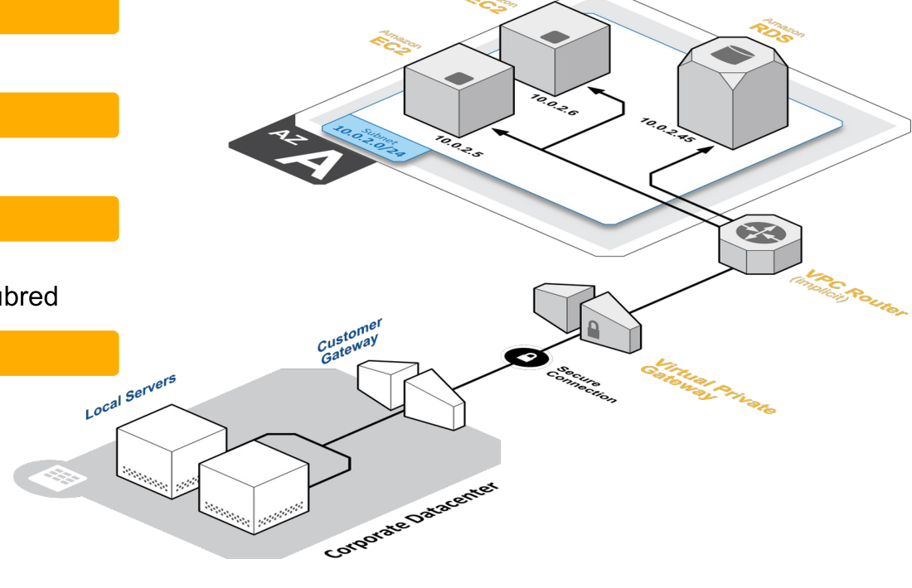
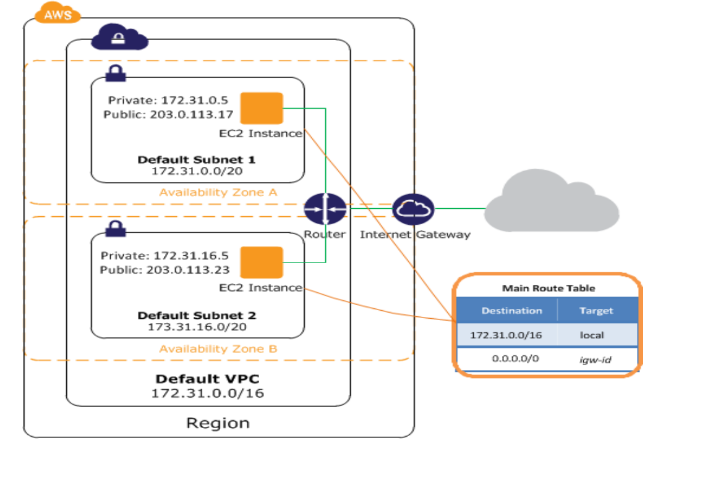
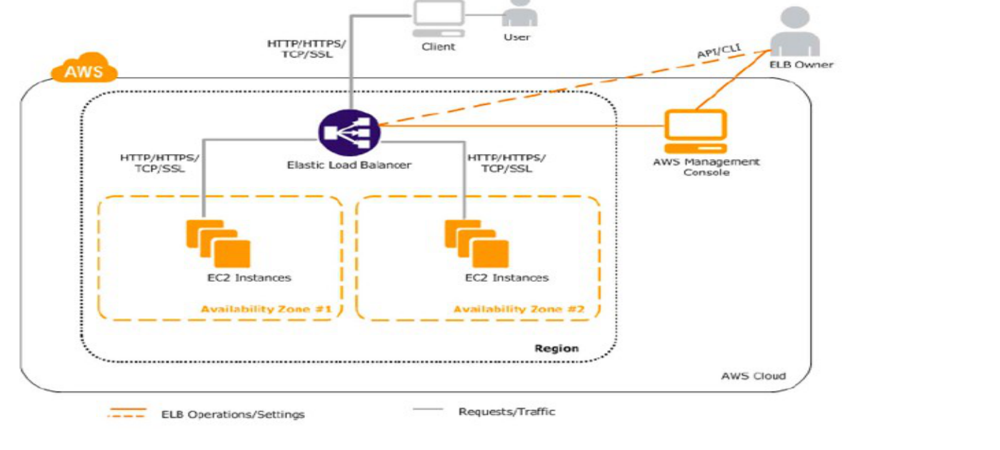
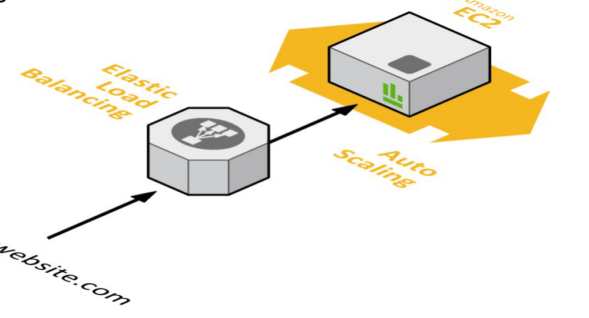
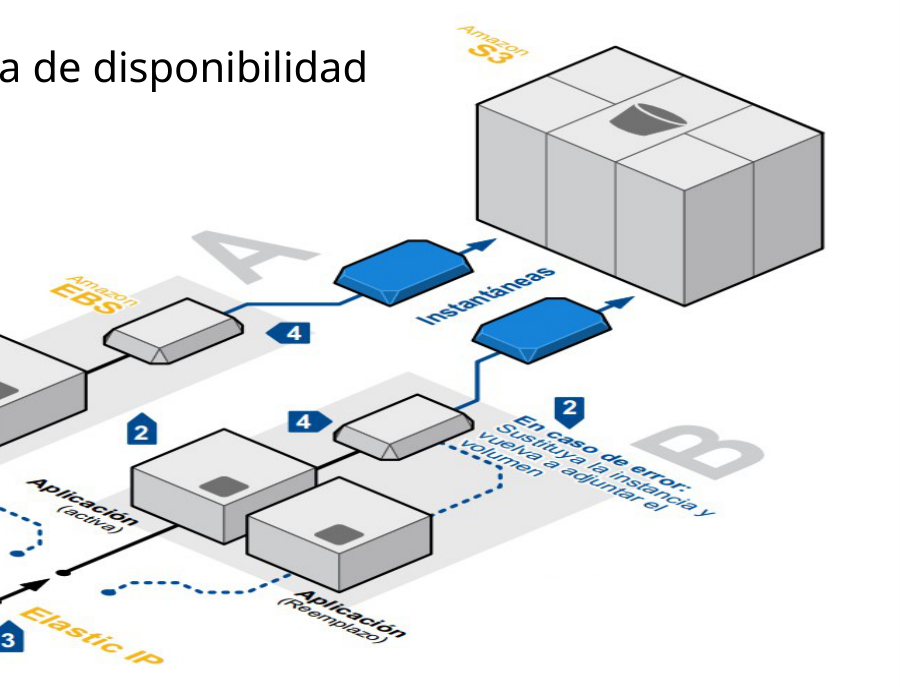
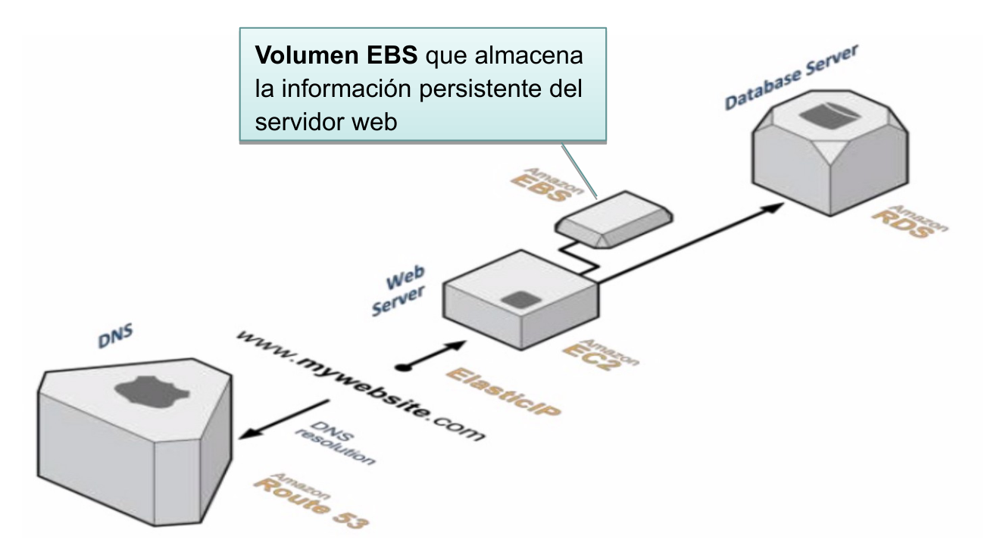
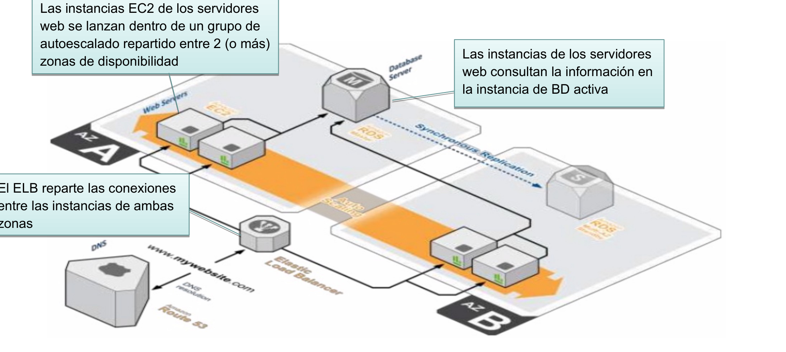

Aplicaciones y servicios en la nube
Temas de COMPNU · 3/3
- 1. Introducción a la computación en la nube
- 2. Mecanismos de virtualización
- 3. Aplicaciones y servicios en la nube
3.1 AWS como ejemplo de nube pública
Amazon Web Services (AWS) es la filial de Amazon que ofrece servicios en la nube de los tres tipos: IaaS, PaaS y SaaS. Se lanzó oficialmente en 2006 con una idea curiosa: aprovechar los recursos de los sistemas de Amazon en las épocas de pocas ventas. En 2025 facturó $128,73B y hoy ofrece más de 100 servicios para alojamiento web, aplicaciones empresariales y móviles, Big Data, IoT, HPC, streaming, realidad virtual o computación cuántica.
3.1.1 Regiones y zonas de disponibilidad
AWS tiene centros de datos repartidos por regiones de todo el mundo. Dentro de cada región hay varios centros separados entre sí, llamados zonas de disponibilidad (availability zones, AZs), a varios kilómetros unos de otros, lo que mejora la fiabilidad mediante replicación: si una AZ cae (un incendio, un corte eléctrico), las otras siguen funcionando. Por ejemplo, la región de París tiene 3 AZs llamadas eu-west-3a, eu-west-3b y eu-west-3c, y España tiene la región eu-south-2 con 3 AZs desde finales de 2022. El usuario elige la región y, en algunos servicios, la AZ.

Analogía: las sucursales de un banco
Una región es una ciudad donde el banco tiene presencia; las AZs son varias oficinas en barrios distintos de esa ciudad. Si una oficina se inunda, las demás siguen atendiendo, y como están en la misma ciudad pueden compartir información rápidamente.
3.2 Servicios de computación: EC2
Amazon EC2 (Elastic Compute Cloud) es el servicio para desplegar máquinas virtuales bajo demanda; en AWS a los servidores virtuales se les llama instancias. Ofrece control total sobre las VMs (acceso como root, interfaz para parar, reiniciar y terminar), es flexible (decenas de configuraciones de CPU, memoria, disco, SO, software...), elástico (aumenta o reduce la capacidad dinámicamente), fiable (SLA del 99,99% de disponibilidad en cada región) y seguro (credenciales, cifrado, grupos de seguridad, VPC...).
3.2.1 AMIs
Las AMIs (Amazon Machine Images) son imágenes preconfiguradas (SO, software...) a partir de las cuales se lanzan instancias. El AWS Marketplace es un catálogo de AMIs gratuitas y de pago, incluidas las publicadas por terceros.
3.2.2 Tipos de instancias
Hay varios tipos de instancia para distintos casos de uso, agrupados en familias. Su nombre sigue un patrón:

Enc5d.9xlarge: c es la familia (computación), 5 la generación, d las capacidades adicionales (SSD local) y 9xlarge el tamaño.
La letra inicial indica la familia, el número la generación, y las letras finales, características adicionales: a, i, g → procesador AMD, Intel o AWS Graviton (ARM); d → SSD NVMe locales; z, e, n, b → mejoras de CPU (z), memoria (e), red (n) o almacenamiento (b); Flex → rendimiento base garantizado con capacidad de subir temporalmente al 100%. Las instancias usan AWS Nitro, una combinación de hardware y un hipervisor diseñado por AWS.
| Familia | Ejemplos |
|---|---|
| Propósito general | M9g(d), M8/M7/M6/M5..., T4g, T3(a), T2, M2ProMac, M1Mac |
| Optimizadas para computación | C9g(d), C8, C7, C6, C5 |
| Optimizadas para memoria | R9g(d), R8, R7, R6, X8, U7i, z1d |
| Optimizadas para almacenamiento | I8g, I7i(e), Im4gn, Is4gen, I4, I3(en), H1, D3(en), D2 |
| Con aceleradores (GPU, etc.) | G7(e), P6, P5, Trn3, Trn2, Trn1, G6(e), G5, G4, P4, F2, Inf2, Inf1, DL2q, DL1, VT1 |
| Optimizadas para HPC | Hpc8a, Hpc7(a/g), Hpc6id, Hpc6a |
3.2.3 Formas de pago
| Modalidad | Cómo funciona | Para qué |
|---|---|---|
| Bajo demanda | Pago por hora (o por segundo en Linux) mientras la instancia está encendida | Uso general, sin compromiso |
| Spot | Subasta: AWS ofrece su capacidad libre a un precio que varía con la oferta y la demanda. El cliente puja; si el precio de AWS queda por debajo de la puja, obtiene las instancias, y se las quitan en cuanto el precio supera su puja | Cargas no críticas que toleran interrupciones: simulaciones, análisis de datos |
| Reservadas | Pago por adelantado con grandes descuentos frente a bajo demanda | Uso continuo y previsible |
| Dedicadas | Recursos en exclusiva, no compartidos con otros clientes | Requisitos de aislamiento o licencias |
Analogía: el transporte
Bajo demanda es coger un taxi: pagas por trayecto. Reservada es comprar el abono anual: más barato si lo usas mucho. Spot es el billete de avión de última hora muy barato, pero que la aerolínea puede anular si alguien paga más. Dedicada es alquilar un coche solo para ti.
Precios por hora bajo demanda (Linux, US East; varían por región y SO): propósito general de $0,0042 (t4g.nano) a $36,66 (m8idn.96xlarge); computación de $0,034 (c6g.medium) a $26,12 (c8in.96xlarge); memoria de $0,0504 (r6g.medium) a $270,73 (u7in-24tb.224xlarge); aceleradores de $0,202 (g6f.large) a $113,93 (p6-b200.48xlarge); almacenamiento de $0,14408 (is4gen.medium) a $24,95 (i7ie.metal-48xl). También se cobran las transferencias de datos de salida, no las de entrada. Para estimar costes hay una calculadora oficial.
Para entenderlo mejor
AWS Pricing Calculator — calculadora oficial para estimar el coste de una arquitectura (web; enlazada en las diapositivas).
3.3 Servicios de almacenamiento
AWS ofrece EBS (almacenamiento en bloques), S3 (de objetos), EFS (de ficheros), FSx (sistemas de ficheros gestionados de alto rendimiento: Lustre, Windows File Server, NetApp ONTAP y OpenZFS), DataSync (migraciones de datos seguras), Snowball (migrar datos a escala de petabytes, en retirada) y Snowmobile (transportar exabytes en un camión, discontinuado).
3.3.1 EBS (Elastic Block Storage)
Son volúmenes de almacenamiento en bloques persistentes (discos duros virtuales) para las instancias EC2. Se montan como dispositivos y se accede a ellos por la red; persisten aunque la instancia desaparezca; son elásticos (se cambia su tipo y tamaño sin interrumpir el servicio); llegan a 64 TiB; se replican automáticamente dentro de su AZ; admiten instantáneas (snapshots) incrementales guardadas en S3 y replicadas en varias AZs, y tienen una durabilidad de hasta el 99,999% (tasa de fallo anual del 0,001%).
| Tipo | Características |
|---|---|
| SSD de propósito general (gp3/gp2) | 1 GiB-16 TiB, máx. 16.000 IOPS y 1.000 MiB/s |
| SSD con IOPS provisionadas (io2 Block Express/io1) | Se especifican las IOPS: máx. 256.000 IOPS y 4.000 MiB/s |
| HDD optimizado para throughput (st1) | 500 MiB/s |
| HDD frío (sc1) | 250 MiB/s |
Los precios van de $0,015 GB-mes (sc1) a $0,125 GB-mes (io2). Las IOPS son operaciones de entrada/salida por segundo (en bloques de 16 KiB en SSD y 1 MiB en HDD).
Instance Store es otra opción, en las instancias que no son "EBS-only": discos conectados físicamente al host donde corre la instancia. Se configuran al lanzarla y son ideales para datos que cambian mucho o como swap, pero se pierden si la instancia se para o hiberna.
3.3.2 EFS (Elastic File System)
Almacenamiento a nivel de fichero (compatible POSIX, como un disco de red), accesible desde varias instancias EC2 a la vez o desde servidores propios (con AWS Direct Connect). Escala automáticamente al añadir o borrar ficheros y es redundante en varias AZs.
3.3.3 S3 (Simple Storage Service)
Almacenamiento de objetos (ficheros y carpetas) a escala global. Los objetos se guardan en depósitos (buckets) y cada uno es accesible mediante una URL única. Tiene una durabilidad del 99,999999999% ("11 nueves") gracias a la replicación en 3 AZs.
Admite un número ilimitado de objetos de 1 byte a 5 TB; su redundancia x3 lo hace resistente a la pérdida simultánea de datos en 2 instalaciones; los objetos no salen de su región salvo que se transfieran a mano; se integra con EC2 (guarda AMIs e instantáneas); ofrece varios controles de acceso (ACLs, políticas, autenticación de consultas...) y se cobra por espacio ocupado (GB/mes), tipo de almacenamiento, número de peticiones HTTP y transferencia de datos.
| Clase de S3 | Para qué | Disponibilidad diseñada | AZs | Duración mínima | Latencia |
|---|---|---|---|---|---|
| Estándar | Datos de acceso frecuente | 99,99% | ≥3 | — | ms |
| Capas inteligentes | Mueve los datos automáticamente entre capa frecuente e infrecuente según el uso | 99,9% | ≥3 | 30 días | ms |
| Estándar – acceso poco frecuente | Datos de acceso infrecuente | 99,9% | ≥3 | 30 días | ms |
| Única zona – acceso poco frecuente | Sin replicación x3 → más barato | 99,5% | 1 | 30 días | ms |
| Glacier (recuperación instantánea o flexible) | Backups a muy bajo coste | 99,99% | ≥3 | 90 días | min u horas |
| Glacier Deep Archive | Conservación a largo plazo, acceso muy raro (p. ej., regulaciones que obligan a guardar datos 5-10 años) | 99,99% | ≥3 | 180 días | horas |
Todas las clases tienen durabilidad de 11 nueves; las de acceso infrecuente y Glacier cobran además por GB recuperado.
Analogía: disco, carpeta compartida y trastero
EBS es el disco duro de tu ordenador (solo lo usa esa máquina). EFS es una carpeta compartida de red que usan varios ordenadores a la vez. S3 es un trastero enorme donde guardas cajas etiquetadas (objetos) y las recuperas por su etiqueta (la URL); Glacier es el trastero de las afueras, baratísimo pero donde tardan horas en traerte una caja.
3.4 Servicios de red: VPC
VPC (Virtual Private Cloud) es un servicio de red virtual dedicada: cada VPC es la versión virtual de la red de un centro de datos tradicional. Se pueden tener una o más VPCs por región, y los recursos (como las instancias) se lanzan dentro de una VPC, lo que garantiza su aislamiento y refuerza la seguridad, porque las VPCs están aisladas entre sí.
Cada usuario tiene control total sobre su red: rango de direcciones IP y DHCP, subredes, routers, gateways y seguridad. Permite subredes públicas (con acceso a Internet mediante un Internet Gateway), privadas con NAT (para instancias sin IP pública) y conexiones seguras (VPN o conexión física a la red de AWS). Usar la VPC es gratis; solo se pagan extras como las conexiones seguras o los NAT gateways.

| Componente | Función |
|---|---|
| Subredes | Rangos de direcciones IP |
| Router | Reglas que dirigen el tráfico de red |
| Grupos de seguridad | Firewalls de instancia |
| ACLs (listas de control de acceso) | Firewalls de subred |
| Internet Gateway | Permite a las instancias de la VPC comunicarse con Internet |
| NAT Gateway | Permite a instancias de subredes privadas iniciar conexiones salientes a Internet sin ser accesibles desde fuera |
| VPC Endpoint (Private Link) | Permite a subredes privadas conectarse a servicios de AWS (bases de datos, S3...) sin salir a Internet |
| SSM (AWS Systems Manager) | Gestiona instancias de forma remota y segura sin SSH ni RDP y sin abrir puertos; necesita un NAT Gateway o un Endpoint |
Analogía: la urbanización cerrada
La VPC es una urbanización con valla. Las subredes son sus calles; el router, las señales de tráfico. El Internet Gateway es la puerta principal (se entra y se sale). El NAT Gateway es una puerta de solo salida: los vecinos de las calles privadas pueden ir a comprar, pero nadie de fuera puede llamar a su casa. Los grupos de seguridad son la cerradura de cada casa, y las ACLs, el guarda de cada calle.
Cada región tiene una VPC predefinida con: bloque CIDR IPv4 172.31.0.0/16 (65.536 direcciones privadas); una subred por AZ (6 en N. Virginia) de tamaño /20 (4.096 direcciones cada una); un Internet Gateway; una tabla de enrutamiento que envía el tráfico no local al gateway; un grupo de seguridad y una ACL por defecto que permiten todo el tráfico interno, y reglas DHCP predeterminadas.

Dos subredes por defecto en dos AZs (172.31.0.0/20 y 172.31.16.0/20), cada instancia con IP privada y pública, y la tabla de rutas: el tráfico a 172.31.0.0/16 es local y el resto (0.0.0.0/0) va al Internet Gateway.Para entenderlo mejor
NAT Gateway vs Internet Gateway: VPC y subnets en AWS — subredes públicas y privadas y para qué sirve cada gateway (vídeo, 6 min).
3.5 Servicios de arquitectura software
3.5.1 ELB (Elastic Load Balancing)
Un balanceador de carga reparte las peticiones entre varias instancias. AWS ofrece cuatro tipos:
| Tipo | Capa | Qué hace |
|---|---|---|
| Clásico | — | Reparte el tráfico entre instancias EC2-Classic (ya no disponibles) |
| Gateway | 3 (IP) | Despliega y gestiona cortafuegos, sistemas de detección y prevención de intrusiones y analizadores de tráfico |
| De red | 4 (TCP) | Reparte tráfico TCP entre instancias de una VPC; es el punto de entrada de todas las peticiones, que distribuye entre EC2 de distintas AZs |
| De aplicaciones | 7 (aplicación) | Accede al contenido del paquete: por ejemplo, encamina una petición HTTP según su URL o sus cabeceras |
Aporta tolerancia a fallos (detecta instancias en mal estado y redirige el tráfico a otras, incluso entre varias AZs) y seguridad (gestiona certificados SSL). Se cobra por hora de uso, número de balanceadores y capacidad (LCU) o GB transferidos: un balanceador clásico que procese unos 100 GB/mes cuesta unos $18/mes, y uno de aplicaciones con 1 conexión nueva por segundo de 2 minutos y 300 KB cada una, unos $22/mes. Usa una política round-robin para repartir el tráfico entre AZs, a nivel de instancia: cada nuevo acceso va a una instancia distinta.

3.5.2 Autoscaling
Amazon Autoscaling gestiona la escalabilidad horizontal: lanza y termina VMs según la carga, la franja horaria, etc. Es adecuado para aplicaciones con picos de demanda impredecibles o con patrones variables según la hora, el día o la semana. AWS no hace escalado vertical (cambiar el tamaño) de una instancia en ejecución, solo de instancias paradas. Sus funciones avanzadas incluyen el escalado de aplicaciones (lo mismo para contenedores, clusters MapReduce, etc.) y el escalado predictivo, que usa aprendizaje automático para predecir los picos. No tiene coste adicional.
ELB + Autoscaling juntos dan escalabilidad, reparto de carga y tolerancia a fallos. El ejemplo de una aplicación web elástica lo muestra: se define un grupo de autoescalado con reglas basadas en las métricas de CloudWatch (por ejemplo, la carga de CPU) o en aprendizaje automático, y el balanceador reparte el tráfico entre las VMs del grupo.

| Hora | Qué pasa |
|---|---|
| 6:00 | Carga normal: una instancia atiende el tráfico |
| 10:00 | Sobrecarga de CPU → salta una alarma de CloudWatch → se lanza una nueva instancia en el grupo, y el ELB reparte entre las dos |
| 19:00 | Infrautilización de CPU → salta otra alarma → se termina una instancia (y deja de recibir tráfico) → se recupera la situación inicial |
Analogía: las cajas del supermercado
El ELB es el empleado que manda a cada cliente a una caja libre. El autoscaling es el encargado que, cuando ve colas largas, abre más cajas, y cuando se vacía la tienda, las cierra para no pagar cajeros de más.
3.6 Tolerancia a fallos y alta disponibilidad (HA)
3.6.1 IPs elásticas
Son direcciones IP que se asignan dinámicamente a las instancias: desde fuera de AWS se resuelven a la IP pública de la instancia y desde dentro a su IP privada. Sirven como mecanismo de tolerancia a fallos, porque si una instancia falla se reasigna su IP elástica a otra y el servicio no se interrumpe. Las asignadas no cuestan nada; solo se cobra la hora de IP elástica no asignada.
Un ejemplo es actualizar un servidor web sin cortar el servicio. En la arquitectura, Route 53 (el DNS de AWS) resuelve el dominio a la IP elástica del servidor, que corre en una instancia EC2 y consulta una base de datos RDS. Para actualizarlo, se lanza una segunda instancia con la nueva versión, se le reasigna la IP elástica, el tráfico pasa a la nueva instancia de forma transparente y se termina la primera.
3.6.2 Arquitectura tolerante a fallos
Una instancia EC2 con un volumen EBS y una IP elástica para cambiar la instancia activa de forma transparente; opcionalmente, instantáneas del volumen en S3 y una instancia de respaldo en espera en otra AZ.


Route 53 resuelve el dominio a la IP elástica de la instancia EC2 del servidor web; su información persistente está en un volumen EBS, y los datos dinámicos, en la base de datos RDS.Si la instancia del servidor web falla: se lanza una nueva instancia y se le asigna la IP elástica (transparente para los usuarios), y se monta en ella el volumen EBS del servidor original para recuperar la última información. El servicio solo se interrumpe el tiempo de lanzar la instancia y montar el volumen. Además, las instantáneas en S3 permiten recuperar el volumen si falla el almacenamiento, y una instancia de respaldo en otra AZ permite, reasignándole la IP elástica, tolerar la caída de la AZ principal.
3.6.3 Arquitectura escalable de alta disponibilidad
Combina un balanceador de carga (ELB), un grupo de autoescalado multizona y, opcionalmente, instancias de base de datos RDS en despliegue multizona (master + standby), con réplicas de solo lectura, backups automáticos e instantáneas.

Las instancias web, en un grupo de autoescalado repartido entre dos AZs, reciben las conexiones del ELB y consultan la base de datos activa; la standby, en la otra AZ, se mantiene sincronizada.Si falla un servidor web. El dominio se resuelve a la IP pública del ELB, que reparte las conexiones entre las instancias. Si una falla, el grupo de autoescalado lo detecta por la monitorización y el ELB deja de enviarle conexiones, repartiéndolas entre las demás; el grupo lanza una instancia nueva automáticamente y la registra en el ELB, recuperando la situación previa.
Si falla la base de datos. El despliegue multizona tolera fallos de la instancia y caídas de una AZ completa: la instancia standby está en otra AZ y sincronizada con la activa (master). Si la activa falla, la standby pasa a ser la activa, las consultas se redirigen a ella y se crea una nueva standby en una AZ distinta de la nueva activa.
Así, el despliegue multizona del autoescalado y de la BD tolera la caída de una zona completa, y la BD se puede reforzar con réplicas de solo lectura, backups automáticos e instantáneas.
3.7 Otros aspectos
3.7.1 CloudWatch
Servicio de monitorización de recursos y aplicaciones: recopila y visualiza métricas de EC2, EBS, ELB, RDS, aplicaciones de usuario, recursos locales..., y permite definir alarmas y acciones automáticas (como las del autoscaling). Se cobra por métrica, llamada API, alarma, panel, log y evento, aunque la capa básica es gratuita y suficiente para la mayoría.
3.7.2 Formas de acceso a AWS
Además de la consola web: apps móviles (iOS y Android), APIs REST, QUERY o SOAP (según el servicio), CLIs (terminales Linux/Unix, Mac y Windows PowerShell), SDKs (Java, JavaScript, Ruby, PHP, .NET, Python, Go, Node.js, C++, iOS, Android) y toolkits para IDEs (Eclipse, Visual Studio, IntelliJ, PyCharm, AWS Cloud9).
La CLI permite gestionar todos los servicios desde un terminal o un script con el comando aws, disponible en Linux, macOS y Windows, y necesita las claves de acceso:
# Lanzar una instancia EC2 en us-east-1b
aws ec2 run-instances --region us-east-1 --image-id ami-047a51fa27710816e --count 1 \
--instance-type t2.micro --key-name mikey --placement AvailabilityZone=us-east-1b \
--security-groups miSG \
--tag-specifications 'ResourceType=instance,Tags=[{Key=Name,Value=MiMV}]' \
'ResourceType=volume,Tags=[{Key=Name,Value=MiMV}]'
# Obtener información de la instancia
aws ec2 describe-instances --region us-east-1 --instance-ids i-986f2f0e7596cd51
# Terminar la instancia
aws ec2 terminate-instances --region us-east-1 --instance-ids i-0986f2f0e7596cd51
# Ayuda
aws help
aws ec2 help
aws ec2 run-instances help
3.7.3 IAM y credenciales
El usuario root tiene acceso completo a todo AWS. IAM (Identity and Access Management) permite crear usuarios delegados con acceso solo a ciertos servicios y recursos, cada uno con sus propias credenciales, y añadir condiciones (solo por consola o CLI, desde cierta IP...). Se pueden crear grupos con los mismos permisos, y se definen políticas de acceso que se asignan a usuarios o grupos. Los roles de IAM son entidades con una serie de permisos que se asignan a un usuario, una aplicación o un servicio (por ejemplo, para dar acceso temporal a un tercero). IAM no tiene coste.
Tipos de credenciales:
| Credencial | Uso |
|---|---|
| Usuario/contraseña | Acceso a la consola web, con MFA (autenticación multifactor) opcional |
| ID de cuenta e ID canónico | Número de 12 dígitos que identifica la cuenta de forma única, para referenciarla desde un programa |
| Claves de acceso (access keys) | Cifrado simétrico; para el acceso con REST y QUERY (directamente o mediante la CLI) |
| Pares de claves SSH | Acceso a las instancias EC2: la clave pública se añade a la VM al iniciarla y la privada la tiene el usuario (Amazon no guarda claves privadas) |
3.7.4 Costes y formación
La calculadora de costes (calculator.aws) estima el precio de una arquitectura. El AWS Free Tier ofrece hasta $200 a nuevos clientes y uso gratuito de servicios seleccionados durante 6 meses; AWS Academy ofrece cursos para universidades y AWS Educate, formación libre.
3.8 Ideas clave
- AWS: IaaS/PaaS/SaaS desde 2006, $128,73B en 2025, +100 servicios. Regiones con varias AZs separadas kilómetros (España: eu-south-2, 3 AZs).
- EC2: instancias (VMs) desde AMIs; SLA 99,99%; nombre
familia+generación+capacidades.tamaño(c5d.9xlarge); 6 familias; hipervisor Nitro. Pago bajo demanda, spot (puja, interrumpible), reservadas (descuento), dedicadas. Se cobra la transferencia de salida. - Almacenamiento: EBS (bloques, persistente, 1 AZ, snapshots en S3; gp3/io2/st1/sc1), Instance Store (local, se pierde al parar), EFS (ficheros POSIX compartidos, multi-AZ), S3 (objetos en buckets, URL única, 11 nueves, clases Estándar → Glacier Deep Archive).
- VPC: red virtual aislada; subredes, router, grupos de seguridad (firewall de instancia), ACLs (de subred), Internet Gateway, NAT Gateway (solo salida), Endpoint. VPC por defecto 172.31.0.0/16 con subredes /20.
- ELB (clásico, gateway L3, red L4, aplicación L7; round-robin) + Autoscaling (horizontal, alarmas de CloudWatch) = escalabilidad + tolerancia a fallos.
- HA: IP elástica reasignable, EBS + snapshots en S3, instancia de respaldo en otra AZ; arquitectura escalable = ELB + autoescalado multizona + RDS multizona (master/standby).
- CloudWatch (monitorización y alarmas), CLI
aws, IAM (usuarios, grupos, políticas, roles), credenciales (contraseña+MFA, access keys, pares SSH).